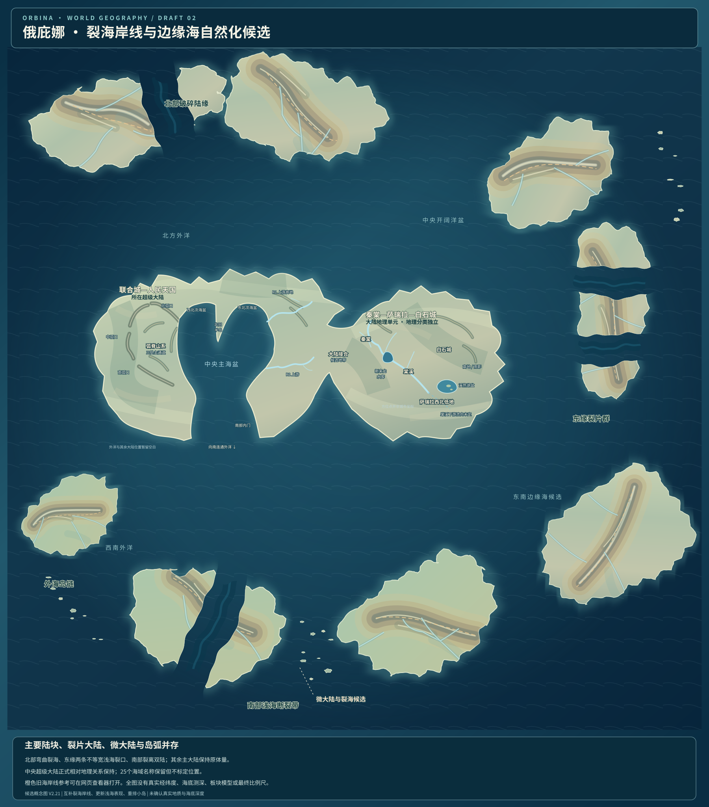
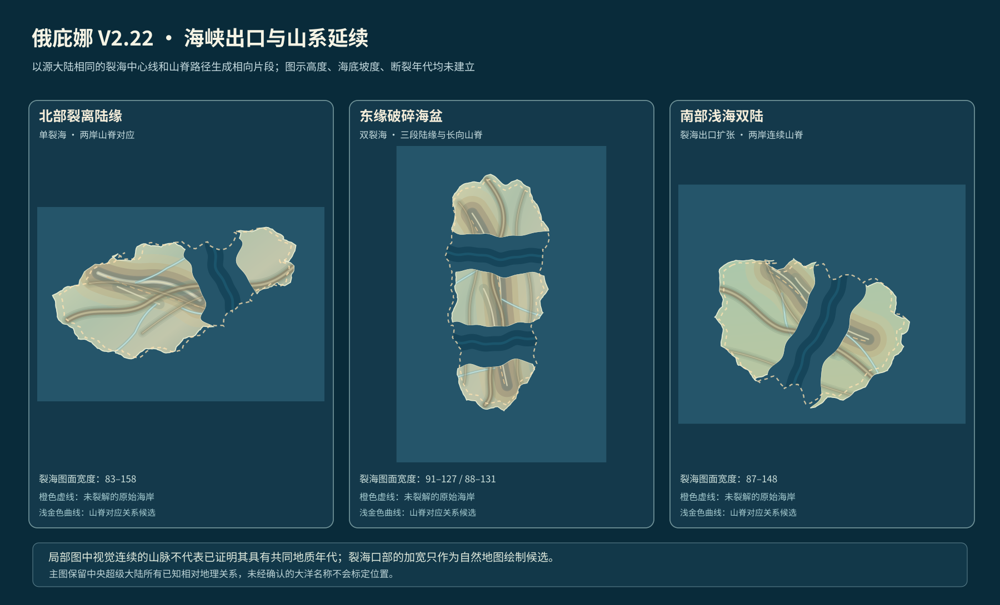

新版地图图层开关
正在载入 SVG 地图…
上一版 V2.21

裂海已经曲折，两岸形态互补，但海峡出口形态及地势连贯性尚未专门处理。
新版 V2.22
四道裂海出口局部扩张，新增九条候选母山脊路径，在保留裂片独立性的同时改善山地表现。
三个区域的局部放大对照
橙色虚线是裂解前的完整海岸，浅金色线是本轮提出的山脊对应关系。

同一破碎地带：海峡出口适度展宽，片段间存在候选山脊延续。保留核心超级大陆和上一版设计可供比较。
正在载入 SVG 地图…

裂海已经曲折，两岸形态互补，但海峡出口形态及地势连贯性尚未专门处理。
四道裂海出口局部扩张，新增九条候选母山脊路径，在保留裂片独立性的同时改善山地表现。
橙色虚线是裂解前的完整海岸，浅金色线是本轮提出的山脊对应关系。
